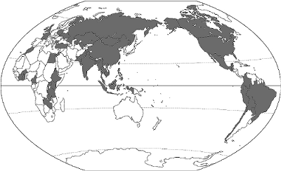
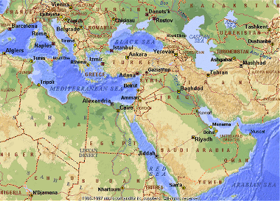
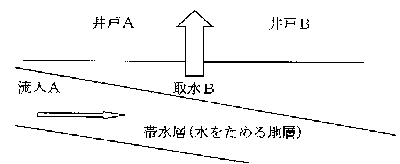

まず最初に自己紹介をさせていただきます。
昭和５０年に高松高校を卒業。
慶応の法学部在学中に、８０日間世界一周（PANAM001便のキャンセル待ちのチケットで）の旅をもインドと欧米を主体にバックパックでやりました。
その経験から、“男の仕事＝海外でのプラント建設“という仕事がしたくて日立プラント建設（株）に入社し、現在、国際営業本部に勤務しています。
会社では、主に、海外の開発途上国等を対象とした日本政府のODA（政府開発援助）資金を利用した飲料水及び下水のプロジェクトの発掘から竣工までの営業活動に従事しています。 昨今は中国、フィリピン、スリランカ、インド、パキスタン、バングラデシュ、ネパール、エジプト、ヨルダン、グアテマラ共和国等向けに、水道建設案件を受注し建設しております。
２ 経緯について
本日はイスラム教の話と、外から見た日本の特殊性について話をしろとの命令がくだされました。
実の所、ここ１２年位で下記のとおり数十ヵ国以上の途上国を冒険旅行してまいりましたが、実際に長くどこかの国に駐在した訳ではなく、又、イスラムの中心である、サウジアラビア、イラン、イラク等産油国には行ったことがないので、かなり独善的なお話になるかも知れませんが、ご容赦いただければ幸甚です。
しかしながら、命の水の世界の水源である河川、ダム、湖と水道施設については、仕事柄、最も多くの場所に調査に行った日本人であろうと自負しています。
最も海抜が低い所は、海抜マイナス３００mの死海付近、最も高い所は、ボリビアの首都ラパスの水源のダムで海抜４５００m、最も寒かったのはウズベキスタンのウルゲンチの深夜で、マイナス４５度、暑かったのは、中東で４５度から５０度の所。

灰色がかった箇所が、私が行った国です
又、本日御出席の皆様も、男であれ、女であれ、そういう話題については、興味を示されるわけなのですが。
しかし、イスラムの女性につきましては、神秘のベールの中につつまれておりまして、私の数少ない経験の中ではベールを剥がす迄には至らず、ちょっとテーマを変更させていただきます。
尚、先ほどのいん毛の話ですが、この出所はエジプトです。
イランに長く駐在されました同期の橋本御夫妻よりのコメントとして、イランではその様な風習はなく、イランで女性が黒いベールをまとっているのは、頭に生えている髪の毛が神聖なものであるからという理由と、水のない国で砂嵐から自分の髪をきれいに保つ為との理由からであるとのことです。
よって、当方の発言の信ぴょう性につきましては、改めて確認いたします。
３ テーマ
本来、自分の体質的には、四国高松という夜這いの文化もあったと言われる日本のカリブ海で生まれ育った為、ラテン体質(血液型もBBBBで双子座)でありまして、テーマは “世紀末の地域別恋愛論”にしたいのですが、これではあまりに本題と離れてしまいますので、仕事がら“イスラム(中近東)の世界と水”とします。 まず、中近東の地理的な区分ですが、東をイラン、アフガニスタン、北にトルコ、西はエジプト、南はスーダンに囲まれた１８ヵ国の地域をいいます。
この地域の最大の特徴といえば、そのほとんどが砂漠と土漠であり、水資源に恵まれない自然条件の非常に厳しい地域であるという事です。
厳しい自然環境が故に、その生活は環境に適合した形とリズムで行われています。
しかし、そこにほんの一部“肥沃な三日月地帯”と呼ばれる地域があり（メソポタミアから地中海東岸、ナイル川流域をさす）、ここで古代文明とイスラム教、キリスト教、ユダヤ教の３大宗教がセム系一神教を母体として作られました。 旧約聖書では、アダムとイブが恋に落ちて（？）禁断の実を食べて神の怒りにふれ、エデンの園を追われ、その後、無信心な人類が神をまたもや怒らせた結果、伝説の大洪水がきて、ノアの箱船に乗っていたノアの息子である、セム、ハム、ヤペテの３人が、地上のすべての民の祖先となったとされております。 長男セムの子孫であるアブラハムは、一族で肥沃な土地を追い求めていたのですが、ある日、カナンの地（今のイスラエルのヘブロン付近）に行くよう神の啓示をうけるわけです。
ここは、肥沃な大地（つまり、十分な水がそこにあった）であり、この時代から、中近東の歴史は、この“水”にかかわる戦いの連続の歴史でもあった訳です。
（近代においては、ロシアの南進対策、石油利権、スエズ運河の運行権等もありますが）

ここで一般的な水のお話しを少し。 地球上のすべての水の総量（海水、氷河、河川、湖沼、地下水）は、14億kmlで、その中で比較的安価に飲料水として利用できる表流水は、22万Kmlあると推定されております。(たった0.016%) 水の循環を地球規模で見た場合、雨が降って、森林という大きな地上のダムに保水され、少しずつ集まって小川のせせらぎになり、やがて大河となり、海に流れていきます。
地上で汚され、海にそそがれた水は海水によって希釈され、蒸発という自然の原理により、塩分、ミネラル分、汚濁物等と分離され、本来であれば、きれいな蒸流水の雲となり、それが風にのって山に当たって雨になり地上を潤す事になるのです。（このサイクルを簡単に言いますと、１７０年、海の中の海水として対流していたAという水の分子は、雲になり、雨になり、やがて又川を経て海にもどるまで、ほんの１０日地表にあるだけの計算になります。）
人類は、海水では生活ができません。
従って、将来のこの星を守る為にも、地上の水の循環を正常に保つ必要がある訳です。
しかしながら、昨今、人口の激増に伴う農業生産を上げる開墾や、開発の為に、森林という巨大なダムが急速に失われるに至って、地表の表土が流失し降った雨は激流となって、洪水をおこしたりして、水が地表にとどまるサイクルが短くなっているのです。
これは、人口の急激な増加との関連で考えますと、一人あたりの表流水がますます減っているわけで、限られた水資源をいかに有効的に人類に供給するか、水循環を如何に効率的にするかという大きな課題があるわけです。 これは、たまたま水の問題を提議した訳ですが、人口、食料、環境、大気等で文明の発展とともに、予想だにしなかった問題が地球規模で起きているのが現状で、理性ある解決策を実行に移さなければ臨界点を超えてしまう事も予想されます。
４ この地域における水の問題についてのトピック
| 中東の主な国の自然環境条件 | ||||
| 人口 (万人) |
冬季気温 (摂氏) |
夏季気温 (摂氏) |
降雨量 (ｍｍ) |
|
| エジプト | 5,922 | 13.9 | 28 | 24 |
| スーダン | 2,809 | 22.6 | 31.8 | 135 |
| イスラエル | 554 | 8.3 | 22.9 | 624 |
| ヨルダン | 544 | 7.7 | 25.1 | 276 |
| サウジアラビア | 1,788 | 14 | 35.2 | 118 |
| イラン | 6,728 | 3.1 | 30 | 210 |
| イラク | 2,044 | 9.4 | 34.7 | 154 |
| 日本 | 12,519 | 5.2 | 25.2 | 1,405 |
１)ナイル川の水の問題 エジプトでは、上記に記載あるとおり、年間24mmしか雨が降りません。
よって、全ての水は大いなる母なる大河“ナイル”に依存しているわけです。
現在、砂漠の中に、ナイル川から直径4ｍものポンプﾟを２０数台も使って、新都市を作ろうという計画が実行されています。
尚、隣のリビアでも、エジプト国境の南部で日量１００万トン以上の水を地下水としてくみ上げ、湾岸線に供給しようという“Man-Made River Project”という計画が建設中であります。 ２)ヨルダンとイスラエルの水の問題 つい5月18日に、ヨルダンの首都アンマンに水を供給するプロジェクトを受注しました。
これは、ヨルダンとイスラエルが和平合意の後、イスラエルが第4次中東戦争で取った水の一部をヨルダンに返すことになったわけでして、海抜マイナス２５０mの地点で約12万トン/日の水を取水し、海抜約800mのアンマンまで圧送し、それを処理して、週に2日しか水道の供給のないアンマン市民に水を供給するプロジェクトです。
これは、歴史的な大事件でありまして、この種のプロジェクトとしては大型案件です。
この様な地図に残る案件に関与できて、ちょっと興奮気味でありますが、今、新たな問題に直面しております。 ３)パレスチナの水の問題
パレスチナは特殊な国です。
第2次世界大戦以降、戦勝国の論理で、ユダヤが彼らの国土にイスラエルという国を建国してしまいました。その後の歴史は、別に参照していただければと思いますが、現状、この国が抱えている水の問題は下記であります。 (1)パレスチナには大河も小河もせせらぎすらありません。 (2)乾燥気候の地域で冬季の11月から3月までにほんの少しだけ雨が降ります。ほとんどの国土が砂漠と土漠です。 (3)パレスチナには港も空港もありません。よって、現状すべての資材は、イスラエルとの国境を経由して入って来ます。 (4)パレスチナには、有効な地下水を含んだ帯水層はあるのですが、ここはイスラエルによって占拠されています。イスラエルは、その昔、石油探査という名目で、パレスチナにある優良な帯水層のある地域を調べ尽くして、そこを占拠しているのです。その地域は今だ鉄条網で囲まれ、端々には、銃をもった歩哨がたって、道行く人をチェックしています。 (5)イスラエルは、深井戸を掘るための掘削機をパレスチナに持ち込むことを認めていません。
このような中で、現実に人々がどのような生活をしているかといえば、浅井戸から水をとっているのです。
しかしながら、この浅井戸に、生活排水を溜めた浸透式の浄化槽から汚染物質が浸入するため、非常に悪い水質の水を飲んでいるわけです。
アンモニア濃度が高く、幼年時にそれを飲んでいるが為に脳に障害を持つ子供も多いといわれています。
水は命の源で、それを制御するという国と国の戦いが今だ、ここにはあります。 パレスチナのUNDPの事務所で、東芝を辞めたまだ若い日本人のお嬢さんが、鉄条網のすぐそばに井戸を掘って、Sweet Waterを供給すべく頑張っておられました。 ４)インド・バングラデシュ国境地域の水の問題 インドは、４つのカースト（３０００の職業別集団）と数十の言語を持つ１0億の民を抱え、我々の理解を超越した国であります。 現在、インドの東、カルカッタ周辺のウエストベンガル州では、その地域に住んでいる約2000万人の人が砒素の入った水を飲んでいる、若しくは、将来飲むことになるという大きな問題が起きております。
現実には、砒素を飲みつづけ、最終的には皮膚ガンになり死んでいく人が増え続けています。 約3年前より、この問題の解決策を作るためにカルカッタに頻繁に行っていたのですが,、インドとパキスタンが核実験を行った為、日本政府の援助が停止しており、有効な解決策が行われないまま現在に至っています。
この背景としては約30年前、人口増加に対応する食料問題を解決するために、共産政権の為、中央政府からの補助金をほとんど受けられなかった、ウエストベンガル州では、最も簡単でコストの安い井戸を掘って灌漑をはじめました。
この地では、太陽のエネルギーと化学肥料の供給の増加によって、水さえあれば、2期作も3期作もできるという状態であり、農民たちはそれによって、豊かな暮らしを夢見たのです。

しかしながら、帯水層への流入より以上の水を吸い上げた為、本来、水をためていて空気が、入らないはずの帯水層に入り、ヒマラヤが隆起した時のエネルギーによって出来た硫砒鉄鉱が酸化し、砒素が地下水にしみだして、農業灌漑用水と飲料水を汚染しているのです。
地下水系は網の目のようにひろがっており、この汚染地域の分布は正確に把握されていないのですが、拡大しており、実際上ウエストベンガル州の大半とバングラデシュの国境沿いの地域(多分四国と九州全部を入れたよりも広い地域で)において問題が顕在化し、病人や死者がでているのです。 対策としては、砒素に汚染されていない水を供給するしかないのですが、地下水では、もう安全性を確保できず、表流水を処理して配るにしても、その地域はあまりにも広い地域で、あまりにも大きな人口を対象にせねばなりません。
又、国はそれだけのコストをとても負担できる状況ではないわけで、世界銀行を中心とした国際機関が対策を検討はしていますが、まだまだの状況で、早急なる対策の実行が望まれます。 調査の途中。カルカッタに近いある新興住宅地で、やっと立てた家の井戸から砒素がでているとは知らず、8ヶ月その水を飲んだが為に、まだ8歳の少女の背中に黒皮病の斑点が出て、助かるかどうか解らないという状況に直面し、無力感を感じてしまいました。
硬い話終わり。(硬い話になるので、あまり面白くなければやめようかと思っているのです。もしくは入れても、話はせず、後で読んでもらう。)
５ イスラム教の国におけるトピック
イスラム：“和をもって平らにするという意味“
１)実践の書“コーラン” 1400年前に書かれたコーランは非常に今日的であり、測り知れない知恵の深さを覚えます。 知恵の結晶がイスラムで“5行”と呼ばれるものであり、
信仰の告白（シャハーダ）：イスラムの教えを守って生きる宣誓 礼拝（サラート）：心と体を整える役割を持つ 断食（サウム）：肉体のクリーニング、精神力、同情心を作る。 巡礼（ハッジ）：イスラムの人間の最高の夢 喜捨（ザカート）：神との約束を基礎とした社会システムの安定基盤であり、これが、イスラムの人間が守る基本的なこととされている。 ２)イスラムの女性の人権 イスラムでは、コーランで女性の権利は明確に記載されています。
但し、女性と男性は別の世界に生きており、夫婦、家族、親族以外は、ほとんど男女が一緒になることはありません。
よって、妻は夫以外の人と会話することさえタブーです。
イスラムでは、結婚は契約であり、その昔は羊3頭で女性を息子の嫁にしたというところでも有ります。 イスラムの世界で被選挙権が女性に認められている国は少ないです。
シーア派が多いイラン･イラクではかなり前から認められておりましが、人口の９０％近くを占めるスンニ派の国ではまだまだです。
（最近ではクエートでも認められるに至ったのですが、）
イランのパーレビ国王が行おうとしていたのは、それまで７メジャーズに抑えられていた石油価格を２＄から７＄まであげることなどの産油国対メジャーの戦いとともに、白色革命といわれるように文化の西欧化を急激に推し進めることでした。
これに対する経済界、宗教界、貧しい下町保守層が反パーレビとなりイラン革命がおきた訳です。
（宗教界からは、この改革のひとつである女性の解放、服装の西洋化など、イスラムの教義に反することに対しての対立もひとつの要因でありました。） ここでアメリカ大使館人質事件の時の話をひとつ。
実は、我々のある関係筋の人間が、イラン人がアメリカ大使館の壁を乗り越え、占拠されようとしていた正にその時、大使館の中にいたわけです。彼はその他大勢と一緒に、アメリカ海兵隊の仕官に集合させられ、2つの選択枝を与えられたそうです。
ここにとどまるか、若しくは逃げるか？
彼はその日の飛行機で日本に帰る予定だったので、“逃げる”を選択して、1km先にあるイギリス大使館まで地下のトンネルをくぐって逃げたそうです。
そこから、暴動の中をアメリカ大使館の前に止めていた車まで歩くわけですが、自分のドライバーは、雨の中、６時間自分を待っていてくれた、だから日本に帰れたのだと印象をこめて語られました。(これが、掟を守る姿勢の見本だと) ３)イスラムの女性がチャドルで肌を隠す理由(猥褻談義の続き) ものの本によれば、西洋文明は、弱肉強食の世界で、力のあるものはいくらでも稼げ、弱いものは全てを失う“強い人間の論理”の社会であります。
肌をあらわな女性が町を歩いていて、何も感じない健康な男はいないでしょう。
それを見て誘惑に負けてコントロールを失い、事件を起こせば、その人間が弱い人間だからであるとされ、罪を犯した当人をさばいて終わるわけです。 今日の都市にはそういう弱い人間の悲劇的な例が数え切れなくあります。
本当の幸せな社会とは、そういう弱い人間も無事に生きられるような社会であるべきとし、マホメッド預言者は、1400年前に、弱者も救済する社会構造を理想としたのです。 それに対応する方法のひとつとして、“肌をあらわにしないように”とチャドルの着用をすすめたのです。 キリスト教や仏教では、チャドルのような“肌を隠すもの”を着るように言わなかったのかもしれませんが、逆に肉欲そのものを“穢れ”“忌むべきもの”としてあつかっています。
キリスト教では、聖職者は結婚できないのですが、イスラムでは、全ての人間は普通に結婚して自然に生きろと教えております。
もちろん、肉欲も自然に有るもののひとつとして、素直にこれを認めているわけです。 ４)一夫多妻制度が認められている訳 イスラム教では４人迄の女性を妻にすることが認められています。 これは、イスラムの人々がジハード（聖戦）に行く宿命を背負っており、その為に戦死する場合も多く、又、他方で、もしジハードに勝った場合は、相手の民族の男を皆殺しにするわけです。
上記で述べたように、女性は、職につく事が許されないわけで、一夫多妻制は、そのような社会での未亡人に対する社会福祉制度であると解釈されています。
ただし、４人の妻を平等に愛さなければならず、経済力だけでなく、体力も絶倫でなければなかなか対応出来ないと言う問題点もあります。
源氏物語によれば、日本の中世においても、一夫一婦制度が確立していた訳ではなく、通い婚であった訳ですし、戦前までは、財力のある方がお妾さんを持つという風習もどこそこであった訳ですから、そこに日本との比較において大きな差はないのではないでしょうか？
現実的には、現代ではかの地でも普通の家庭ではほとんど見かけられないのが実情の様です。 ５)割礼を行う訳 先ほどご説明しましたアブラハムの一族が神の啓示を受けた後、一族の男子はすべて割礼をすることになりました。（この一族は、紀元前１７世紀頃に干ばつの為、エジプトに渡るのですが、ここで人口が増え続け、エジプト人とのいさかいが耐えず、結局はイスラエルに帰ります。）
この時の話がモーゼの十戒となる訳です。 しかしながら、これは、男性に限ったはなしではなく、現在においては、女性も、幼少の段階で女性器を割礼する事が行われていると言われております。
これも水と関係があるわけで、割礼した方が水で洗えないところでも、比較的衛生的にすごせるからではないでしょうか？
ここからは確認作業がいるのですが、女性器を切る事によって、女性の感度を低下させ、厳しい自然環境の中で、惑わずに人間が生きていく為の知恵ではないかと思われます。 ６)エジプト人の男性のズボンには、日本人のズボンにないポケットがあったという噂<
この噂につきましては、現状どうも最終確認ができておりません。
確かにこの話をどこかで聞いたのですが、現在カイロで売っている既製品のズボンには付いていない様です。
これが、割礼と関係が有るかと考えたのですが、ちょっと不明。（この意味は、想像願います。） ７)イスラマバードの空港で日本人女性を良く見かけた訳 90年代前半にイスラマバード（ガンダーラは、ここより車で2時間のところ）に3ヶ月ぐらいいた時の話。
たまに空港に誰かの出迎えとか見送りに行ったら、ほとんどの場合、日本人女性が単身もしくは、パキスタン人と二人連れで降りてきました。
パキスタンは、アレキサンダー大王に占領されたことがあり、見ただけでは、日本人が総称アメリカ人と思っている白人系の人種が主で、パキスタンジゴロが日本国籍とお金を取る為に、純情な日本人の独身の女性をたぶらかしていたのです。
一度得た獲物には餌を与えない狩人が多いですから、くれぐれも外国人とお付き合いするときは気をつけてください。 大使館の話では、空港から家につけば、土漠の中の石の家の奥の奥に監禁され、言葉も風習も理解できず、毎日、涙涙で外にも出てこれずにいる方も多く、週に一人はそれでも大使館に逃げてきていたという事実があるそうです。 ８)エジプト人の平均寿命が非常に短い訳 エジプト人は平均寿命が50代半ばです。
何故か。
ひとつには糖分の取りすぎです。
この為に非常に大柄です。（これらの国での平均的な美人像は太った人であること、又、それが富の象徴であることが背景にあるわけですが。）女性も15-6の時はフランス人形のように美しいのですが、20を過ぎると体重が極端に増え続けます。 もうひとつは、重金属を多量に含んだ野菜,果実などを取っているからです。 野菜、果実、穀物などを作るには有機物を含んだ土が必要になる訳ですが、有機物は強い日光の元では簡単に無機物になってしまいます。
今世紀最大の土木構造物の失敗であるアスワンハイダム（これは、ソ連の設計で、もう既に建設後、数十年が過ぎているにも関わらず、ダムの水位は設計値にまで至っておりません。）が出来て以来、有史以来肥沃な土地であったナイルデルタには、洪水に伴う自然の有機肥料の分配が出来なくなってしまい、それが為に農地に、人工的な肥料を使わざるを得なくなりました。
カイロ北部では、下水処理場から出てくる汚泥を一部有機肥料として使っているわけですが、これには工場から排出される産業廃棄物の重金属なども含まれており、これが植物連鎖を繰り返してるというレポートがUSAIDより1980年代末に発表されております。
しかしながら、今のところ、この改善策は取られていないのです。 ９)飲酒、豚肉を食べない訳 イスラムでは、飲酒は、宗教の戒律で認められておりません。
但し、この風習は東に行くほど解釈に差があり、マレーシア、インドネシアなどにおいては、あまりきつくは有りません。 豚肉についてですが、これは、いろいろな説があるのですが、宗教的には、豚が一度の繁殖の季節に一夫一婦制をとらずに乱交してしまうから不浄であるという解釈もあるようですが、現実的には、かの地においては、非常に腐敗の早い豚肉は食中毒の可能性が高かった為に、生活を守る為に戒律の中に入れたのではなかろうかと思われます。 10)イスラムのうどんについて 中央アジアにウズベキスタンという国があります。
この国にはアラル海という湖があるのですが、ソ連時代に綿花を作るための大規模灌漑施設を作ったために、今や世界地図からアラル海は無くなろうとしています。
シルクロードの拠点のサマルカンドは、東京芸術大学の平山学長がシルクロードの題材として描かれた青い色をした町なのですが、ここの昼食は、毎日、羊か牛の筋肉の入ったうどんで、その味は何となく故郷高松の味とベトナムの肉入りのファー（ベトナム人は米で出来たこのうどんを毎朝の朝食としてとっているのですが）に近いと感激した覚えがあります。
海外旅行の通の方しか来られない砂漠地帯ですが、冬の夜、韓国系の移民であった役所の人間と、ウズベク風の乾杯を続けてウオッカを飲まされた後に、マイナス４０度位の中で砂漠に、アンモニアの入った水を蒔いていると、空に（天の川）MILKY WAY。 自分は一人ここで何をしているのかという孤独感と、自然のあまりの大きさに感無量で、涙を止める術がなかったことがあります。 11)イスラムの精神構造について イスラムの世界で、日本人が仕事をこなしていく為の教義として、いろいろな言葉があります。
基本的には、 ４A 慌てず、焦らず、当てにせず、それでも絶対諦めず。 IBM インシャラー、ボックラ、マリッシュ ラテンでは、アシタマニアーニャとほぼ同じ意味 イスラムの人は、非常に敬虔なイスラム信者で、その生活は、イスラム教戒律によって厳しく律しられています。
多くの人々は、陽が昇る前にコーランを聞きながら、一度目のお祈りを行い、一日に5度祈りを捧げます。
お祈りをすることで精神的な安定と、時間的にメリハリのある生活ができ、又、お祈りの前に手や口をゆすぎ、体を折り曲げるお祈りはフィジカルに体調も調整します。 又、断食の時には、ほとんどの人が、陽が昇っている間はまったく食物を取りません。
よって、その頃は昼間はあまり働きません。 これらの地域では、厳しい自然環境から、働く時間も役所などは8時から2時頃迄で、実働5時間程度のところも多々あります。
よって、当然のことながら、こちらのテンポとは合いません。
日本人ビジネスマンにとっては忍耐力が求められる訳です。
ここで、“慌てず、焦らず、当てにせず、それでも絶対諦めず”という言葉が出来たのでしょう。 今年の冬にヨルダンのフセイン国王が亡くなりましたが、彼が、イラクとイスラエルに挟まれて数十年も国王の座にいながら、国民にも、世界の政治の舞台でも尊敬を続けてこられた大きな理由は、どんな苦境に立たされたとしても、話を良く聞き、会話を続け、進むべき方向に対して忍耐強く生きてこられたことをみんなが知っているからではないでしょうか？
６ イスラムとラテンは合うかという壮大なる実験の結果
つい５月の中旬に、中近東のミッションと中米のミッションが同じ時期に来日され、２次会で、とあるサンバクラブ"P"にお連れしたのですが、イスラムであれ、ラテンであれ、男はみんな“愛の狩人”ですから、美しい女性を見れば声をかけたくなるものです。
この結果として、ラテンの方は、自分も周りのみんなをも楽しませる技を持っています。
一方、イスラムの方は、男子校を出たばかりの大学生の様に、うまく声すらかけられない。ちゃんとした会話も出来ないのですが、それなりに時間とともにラテンの音楽とダンスを楽しんでいました。
この2つの違う文化なのですが、双方に言えることは、家族、親族、友人に対する大きな愛で人間的な生活をしている事です。
これは、“生と死”を実生活の中で肌で感じて生きている為、ラテンは如何に生を楽しむかを、イスラムは如何に死を避けるかという点に起因しているのではないでしょうか？。 ７ 結論 日本人は、その昔、日本でも自然と戦わざるを得なかった時代においては、隣人と助け合いながら、貧しき中にも背筋のきりっとした愛情の深い人間が多かったのだろうと思います。
精神的に仏教と儒教が根本に流れており、それなりに教育ﾚﾍﾞﾙも高く、単一国家で、他国に侵略されたことも無い為か、非常に無防備であるとともに、同じ価値観を持ち、言葉で言わなくても分かり合えるという文化の中で育ってきました。
しかしながら、昨今は、急激な西欧化と物質文明の賛歌により、本来日本人が持っていた文化が損なわれ、物質文明に毒され、人生の目的が明確に認識できない社会になっているのではないでしょうか？
一方、中東に住んでいる人々は、今だ本当に劣悪な自然環境の中で生きていかざるを得ず、水と食料を求めて戦いつづけ、侵略し、侵略される歴史の連続の中で、自分で思ったようにほとんど物事は進まない状況の中で生きてきた歴史があります。（インシャーラーの世界） その様な劣悪な状況であるが故、又、全ての人間が生物として強い訳ではない真理の中で、知人、親族、家族との結びつきは非常に強く、常に助け合いながら、イスラムの教えの元、それらを守る為には戦い抜いてきたわけです。
日本の経済が今、グローバルスタンダードの荒波の中に入っていこうとしている時、我々日本人に必要な点は、人生の目的、価値観をもう一度見直すことではないでしょうか？
必ずしも欧米の経済合理主義（弱肉強食の世界）がすばらしいものではないと思うのですが、なんとなく中途半端な“護送船団方式”に甘えて生きてきた時代（もともとは、もっと崇高な愛すべき文化のあった日本だった）とは決別し、生き抜いて行かなければならない時代が近づいています。
イスラムと同じアジア文化の中で育った我々の未来は、欧米流の弱肉強食主義の中にそのまま放りこまれたなら、今のままでは生き残れないということを肝に銘じて、少しずつでも、着実に世界標準の中でも生きていける様に改革しながら進んでいかねばならないと体で感じているわけです。
（世界標準が欧米の経済合理主義になるかどうかは別としても、国境のない経済活動は今後も大きな潮流となって進んで行くでしょう。）
最後に皆様のご健勝をお祈り致しますとともに、何とぞ、本年度の東京玉翠会開催の為のご支援、ご協力をお願い申し上げます。
99年東京玉翠会の動員担当 中山易典 Yasunori Nakayama ”大切にしたいクリーンな地球” 日立プラント建設株式会社 国際営業本部第一部 東京都千代田区内神田1-1-14 （会社）TEL:03-3295-9885 Fax:03-3292-4418
Ｐ．Ｓ．
最近、ドーバー海峡にある英国のジャージー島の下水処理場に、ペガサスという当社が開発した脱窒システムを売りました。これで瀬戸内海も守らんと思っています。
瀬戸内で、窒素規制などが必要なお客様がおられましたら、下記のホームページにアクセスして下さい。 www.hitachiplant.hbi.ne.jp